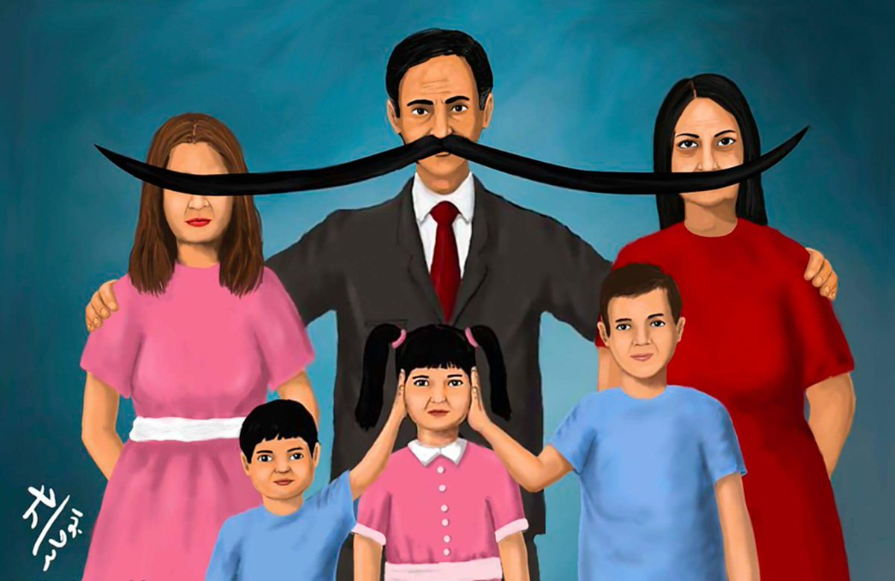

¿Qué es el Androcentrismo?
Sitúa al hombre como el centro del mundo e invisibiliza a la mujer
LA PERSPECTIVA MASCULINA
Visión del mucho en la que el hombre es la meddida paradigma del ser humano
El varón es el único modelo de lo humano
Uno de los ejemplos: En los textos escolares se menciona solo a los héroes de la patria.
